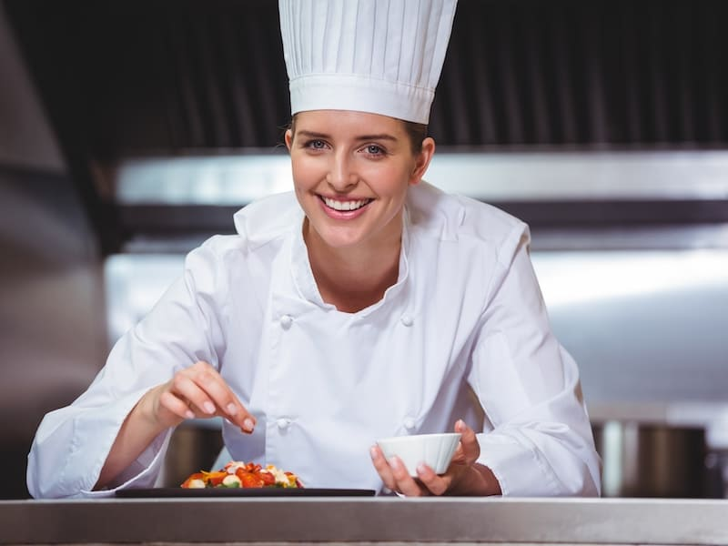
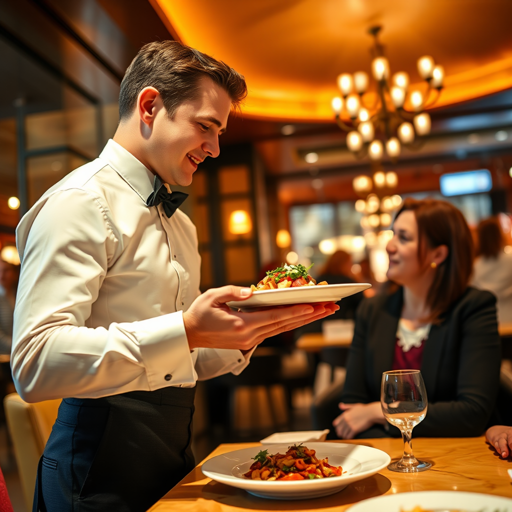
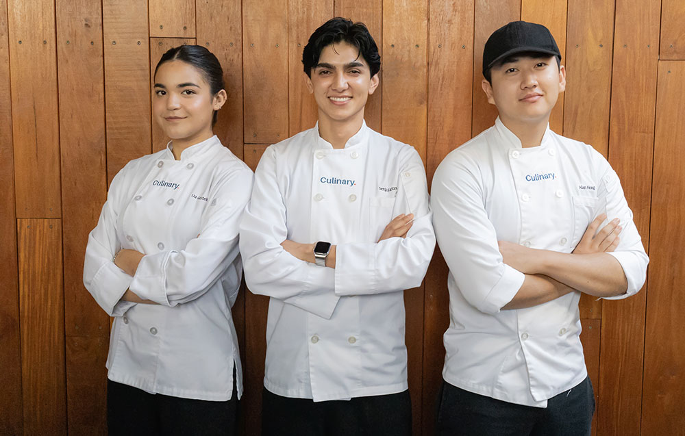

Etapa 2
Cocinero Principal
Dirige al equipo, cocina el plato y le da el toque final antes de servirlo
Las personas detrás de cada experiencia.
Equipo completamente preparado para preparar obras gastronómicas de alta calidad

Dirige al equipo, cocina el plato y le da el toque final antes de servirlo
El encargado de hacer las preparaciones iniciales del plato

Encargado de llevar el plato sano y salvo hasta tu mesa
Así colaboramos para crear cada plato
Todo empieza con el cocinero secundario, que prepara y alista los ingredientes. Luego el cocinero principal, que dirige la cocina, toma esa base, cocina el plato y le da el toque final. Por último, el mesero lo lleva a tu mesa y se asegura de que tengás una buena experiencia.
